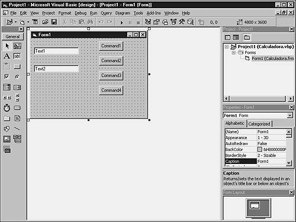
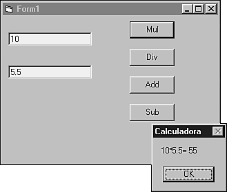
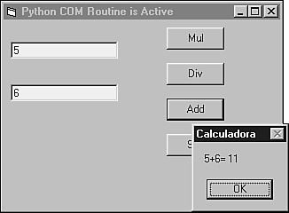
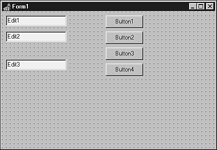
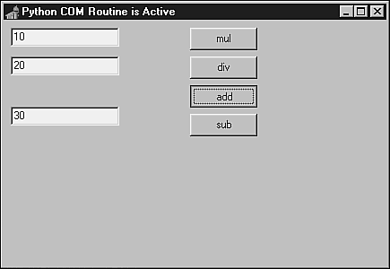

| < BACK | Make Note | Bookmark | CONTINUE > |
Implementing COM Objects in Python
In order to implement COM objects in the Python version of Windows, you need a set of extensions developed by Mark Hammond and Greg Stein. Part of the win32com package, these extensions enable you to do everything that is COM-related, including writing COM clients and COM servers.
The following link takes you to the download page of these extensions:
http://www.python.org/download/download_windows.html
All the Win32 extensions (including the COM extensions) are part of the win32all installation package. This package also installs the PythonWin IDE in your machine.
The latest version of this whole package is located at the win32all home page. Search for the win32all.exe file:
http://www.python.org/windows/win32all/
You can also go directly to Mark Hammond's starship home page, which might have more recent beta releases of this package:
http://starship.python.net/crew/mhammond/
After installing the package in your machine, take a look at the readme.htm file, which is stored at the win32com directory.
COM support for Python is compounded of the core PythonCOM module, which supports the C++ code, and the other modules that implement helper code in Python. The whole package is known as win32com.
The win32com Package
The win32com support is standalone, as it does not require PythonWin. The win32com package itself does not provide any functionality. Some of the modules contained in this package are
win32com.pythoncom— Provides core C++ support for COM objects and exposes COM object methods, such as QueryInterface() and Invoke(), just as the C++ API does. Note that all the reference counting is automatically done for you. Programmers rarely access this module directly. Instead, they usually use the win32com wrapper classes and functions written in Python to provide a nice, programmable interface.
win32com.client— Provides support for COM clients (for example, using Python to start Microsoft Excel and create a spreadsheet). The COM client support enables Python to manipulate other COM objects via their exposed interfaces. All client-side IUnknown-derived objects, including IDispatch, are supported.
win32com.server— Provides support for COM servers (for example, creating and registering a COM server object in Python and using a language such as Visual Basic or Delphi to access the Python objects). The COM server support enables Python to create COM servers, which can be manipulated by another COM client. All server-side IUnknown-derived objects are supported.
win32com.axscript— This is the ActiveX Scripting implementation for Python.
win32com.axdebug— This is the Active Debugging implementation for Python.
win32com.mapi— Provides utilities for working with MAPI and the Microsoft Exchange Server.
Talking to Windows Applications
The COM technology has been part of the Windows world for a long time. The COM genealogy can be traced back to DDE (Dynamic Data Exchange). DDE was the first device for transferring data between various applications in a multi-tasking computer. After some time, DDE was expanded to Object Linking and Embedding (OLE)—note that COM was invented as part of OLE. The creation of the Visual Basic Extensions (VBXs) enhanced the OLE technology for visual components, originating a new standard called OLE2, which was based on top of COM. Soon, the OLE2 technology became more integrated with COM, which is a general-purpose mechanism. Nowadays, COM is mostly known, in part, because of the ActiveX technology.
Professional applications such as Microsoft Office and the Netscape browser enable you to control their objects using COM. Therefore, programs written in Python can be easily used to control those applications.
COM passes string objects as Unicode characters. Before using these objects in Python, it's necessary to convert them to strings. The Python-2.0 Unicode string type is not the same as the string type, but it is easy to convert between the two.
PythonWin comes with a basic COM browser (Python Object browser). This program helps you to identify the current objects in your system that implement COM interfaces.
To run the browser, select it from the PythonWin Tools menu, or double-click on the file win32com\client\combrowse.py.
Note that there are other COM browsers available, such as the one that comes with the Microsoft Visual C++.
If you study the file \python\win32com\servers\interp.py, which is installed as part of your PythonWin distribution, you will learn how to implement a very simple COM server. This server exposes the Python interpreter by providing a COM object that handles both the exec and eval methods. Before using this object, register it by running the module from Python.exe. Then, from Visual Basic, use CreateObject('Python.Interpreter') to initialize the object, and you can start calling the methods.
Word and Excel
Let's quit talking and get to some practicing. Our objective here is to open and manipulate Microsoft applications from Python.
The first thing that you need to do is to import the COM client and dispatch the right object. In the next example, a variable is assigned a reference to an Excel application:
>>> import win32com.client
>>> xl = win32com.client.Dispatch("Excel.Application")
The following does the same thing, but this time the reference is to a Word application.
>>> wd = win32com.client.Dispatch("Word.Application")
Excel.Application and Word.Application are the Program IDs (progid), which are the names of the objects for which you want to create an instance. Internally, these objects have a Class ID (clsid) that uniquely registers them in the Windows Registry. The matching table between progids and clsids is stored in the Windows Registry and the matching is performed by the COM mechanism.
It is not an easy job to identify an application progid, or to find out object methods and attributes. You can use COM browsers to see what applications have COM interfaces in your system.
For the Microsoft Products, you can take a look at the documentation; it is a good source of information.
Not necessarily every COM object implements the same interface. However, there are similarities.
For example, if the previous assignments have just created the objects and you want to make them visible, you have to type
>>> xl.Visible = 1 # Sets the visible property for the Excel application >>> wd.Visible = 1 # Sets the visible property for the Word application
To close both programs and release the memory, you need to say
>>> xl = None >>> wd = None
>>> del xl, wd
These were simple examples of implementing COM clients in Python. Next, we will see how to implement a Python COM server by creating a Python interface that exposes an object. The next block of code registers the interface in the Windows Registry.
Note that every new COM object that you create must have a unique clsid, but you don't have to worry about it. The complex algorithm that works behind the scenes is ready to generate a unique identification, as shown here:
>>> import pythoncom >>> print pythoncom.CreateGuid()
Your COM server is defined next. You have to execute the program in order to make the COM object available in the system. Store it on a file, and double-click on it.
1: class TaxApplication:
2: _public_methods_ = ['PAtax']
3: _reg_progid_ = "Tax.Application"
4: _reg_clsid_ = "{D2DEB6E1-3C6D-11D4-804E-0050041A5111}"
5:
6: def PAtax(self, amount, tax=0.07):
7: return amount + (amount * tax)
8:
9: if __name__=='__main__':
10: print "Registering COM server"
11: import win32com.server.register
12: win32com.server.register.UseCommandLine(TaxApplication)
Line 2: Exposes the method to be exported.
Line 3: Defines the name that the COM client application must use to connect to the object.
Line 4: Defines the unique Class ID (clsid) used by the object.
Line 12: Registers the TaxApplication class.
In order to test the program, we need to have an external COM client. Let's use the Visual Basic for Applications Editor, which is present in both Excel and Word.
Open your Microsoft application, type ALT+F8 in the Macro dialog box, and select the option that creates a macro. Now, you need to type the following block of code:
Sub Tax()
Set TaxApplication = CreateObject("Tax.Application")
newamount = TaxApplication.PAtax(100)
MsgBox newamount
Set TaxApplication = Nothing
End Sub
Now, if you press F5, Visual Basic should display a message box showing the result of our simple tax operation, which, in our case, is 107.
To unregister your COM object you can either pass the argument --unregister when calling your script, or you can use the following line of code inside your Python program:
>>> win32com.server.register.UnregisterClasses(TaxApplication)
A very comprehensive example of using Microsoft Word and Excel is stored in the testMSOffice.py file, which is part of your PythonWin distribution. It's worth checking out!!!
Word
The following code implements a simple wrapper for the Microsoft Word Application. To test it you need to create a Word document and replace its path in the code. The program will open this file, replace the first occurrence of the string "#name#" within the file, add a small bit of text to the end of the line, and print the file.
import win32com.client
False = 0
True = -1
wdLine = 5
class WordApp:
def __init__(self):
self.app = win32com.client.Dispatch("Word.Application")
def open(self, document_file):
self.app.Documents.Open(document_file)
def replace(self, source_selection, new_text):
self.app.Selection.HomeKey(Unit=wdLine)
self.app.Selection.Find.Text = source_selection
self.app.Selection.Find.Execute()
self.app.Selection.TypeText(Text=new_text)
def addtext(self, new_text):
self.app.Selection.EndKey(Unit=wdLine)
self.app.Selection.TypeText(Text=new_text)
def printdoc(self):
self.app.Application.PrintOut()
def close(self):
self.app.ActiveDocument.Close(SaveChanges =False)
worddoc = WordApp()
worddoc.open(r"s:\ template.doc")
worddoc.replace("#name#", "Andre Lessa")
worddoc.addtext(" What do you want to learn ?")
worddoc.printdoc()
worddoc.close
If you type in the name of the object's attribute that accesses the Dispatch method, you get as a result, the COM object name:
>>> worddoc.app <COMObject Word.Application.>
This object is an example of a dynamic dispatch object. The provided name indicates that the object is a generic COM object, and affirms that Python doesn't know anything about it, except the name that you used to create it. All the information about this object is built dynamically.
Besides dynamic dispatches, you can also use static dispatches, which involve the generation of a .py file that contains support for the specific COM object. In CORBA speak, this is called stub generation, or IDL compilation.
In order to generate the Python files that support a specific COM object, you need to execute win32com\client\makepy.py. A list of Type Libraries will be displayed. Select one (for example, 'Microsoft Word 8.0 Object Library') and click OK. You can also call the makepy.py program directly from the command prompt by typing makepy.py "Microsoft Word 8.0 Object Library".
Now, Python knows exactly how to handle the interfaces before invoking the COM object. Although, you can't see any differences, you can check that Python really knows something else now by querying the COM object:
>>> import win32com.client
>>> wd=win32com.client.Dispatch("Word.Application")
>>> wd
<win32com.gen_py.Microsoft Word 8.0 Object Library._Application>
Note that Python knows the explicit type of the object now.
All the compiled information is stored in a file in the win32com/gen_py directory. You probably won't understand the filename because it is encoded. Actually, you don't need to use this file at all. All the interface information is made available via win32com.client.Dispatch and win32com.client.constants.
If you really need to identify the name of the module that was generated, you can use the win32com.client.gencache module. This module has two functions: GetModuleForCLSID and GetModuleForProgID that return Python module objects you can use in your code.
makepy.py also automatically installs all generated constants from a library of types in an object called win32com.clients.constants. After creating the object, all the constants become available to you.
In the previous example, we had to initialize the constant wdLine, because the constants were not available. Now, after running makepy.py, you can replace the line
self.app.Selection.EndKey(Unit=wdLine)
with
self.app.Selection.EndKey(Unit=win32com.clients.constants.wdLine)
and remove the initialization line
wdLine = 5
The next example uses the wdWindowStateMaximize constant to maximize Microsoft Word:
>>> w.WindowState = win32com.client.constants.wdWindowStateMaximize
Excel
Next, we'll see how to create COM clients using Microsoft Excel. The principle is very simple. Actually, it is the same one used previously for wrapping Microsoft Word, as it is demonstrated in the following example.
>>> import win32com.client
>>> excelapp = win32com.client.Dispatch("Excel.Application")
>>> excelapp.Visible = 1
Note that we have to change the Visible property in order to see the Excel application. The default behavior is to hide the application window because it saves processor cycles. However, the object is available to any COM client that asks for it.
As you can see in the example, Excel's progid is Excel.Application.
After you create the Excel object, you are able to call its methods and set its properties. Keep in mind that the Excel Object Model has the following hierarchy: Application, WorkBook, Sheet, Range, and Cell.
Let's play a little with Excel. The following statements write to the workbook:
>>> excelapp.Range("A1:C1").Value = "Hello", "Python", "World"
>>> excelapp.Range("A2:A2").Value = 'SPAM! SPAM! SPAM!'
Note that you can also use tuples to transport values:
>>> excelapp.Range("A1:C1").Value = ('Hello', 'Python', 'World')
To print a selected area, you need to use the PrintOut() method:
>>> excelapp.Range("A1:C1").PrintOut()
What about entering date and time information? The following examples will show you how to set the Date/Time format for Excel cells.
First, call Excel's time function:
>>> excelapp.Cells(4,3).Value = "=Now()"
>>> excelapp.Columns("C").EntireColumn.AutoFit()
The AutoFit() function is required in order to display the information, instead of showing "#######".
Now, use Python to set the time you want:
>>> import time, pythoncom
>>> excelapp.Cells(4,1).Value = pythoncom.MakeTime(time.time())
>>> excelapp.Range("A4:A4").NumberFormat = "d/mm/yy h:mm"
>>> excelapp.Columns("A:C").EntireColumn.AutoFit()
Note that the Cells() structure works like a numeric array. That means that instead of using Excel's notation of letters and numbers, you need to think of the spreadsheet as a numeric matrix.
Visual Basic
In order to implement a COM object using Python you need to implement a Python class that exposes the functionality to be exported. It is also necessary to assign two special attributes to this class, as required by the Python COM implementation.
The first attribute is the Class ID (_reg_clsid_). This attribute must contain a UUID, which can be generated by calling the pythoncom.CreateGuid() function. The other attribute is a friendly string that you will use to call the COM object (_reg_progid_), as follows:
class COMCalcServer:
_reg_clsid_ = '{ C76BEA61-3B39-11D4-8A7C-444553546170} '
_reg_progid_ = 'COMCALCSERVER.VERSION1'
_public_methods_ = ['mul','div','add','sub']
…
Other interesting attributes are
_public_methods—A list of all method names that you want to publicly expose to remote COM clients.
_public_attrs—A list of all attribute names to be exposed to remote COM clients.
_readonly_attrs—A list of all attributes that can be accessed, but not set. This list should be a subset of the list exposed by _public_attrs.
After creating the class, you need to register your COM object. The general technique is to run the module that implements the COM object as a script, in order to register the object:
if __name__ == '__main__':
import win32com.server.register
win32com.server.register.UseCommandLine(COMCalcServer)
Notice that you need to inform the class object, and not a class instance. After the UseCommandLine() function has been successfully executed, the following message is returned by the Python interpreter:
Registered: COMCALCSERVER.VERSION1
When you have your COM object up and running, any automation-capable language, such as Python, Visual Basic, Delphi, or Perl, can use it.
The following example is a complete program that implements a calculator. First, you need to collect the unique IDs for your class:
Python 1.5.2 (#0, Apr 13 1999, 10:51:12) [MSC 32 bit (Intel)] on win32
Copyright 1991-1995 Stichting Mathematisch Centrum, Amsterdam
>>> import pythoncom
>>> print pythoncom.CreateGuid()
<iid:{C76BEA60-3B39-11D4-8A7C-444553546170}>
After informing the new clsid value to the _reg_clsid_ attribute, we have the following program:
# File: comcalcserver.py
class COMCalcServer:
_reg_clsid_ = '{C76BEA61-3B39-11D4-8A7C-444553546170}'
_reg_progid_ = 'COMCALCSERVER.VERSION1'
_public_methods_ = ['mul','div','add','sub']
def mul(self, arg1, arg2):
return arg1 * arg2
def div(self, arg1, arg2):
return arg1 / arg2
def add(self, arg1, arg2):
return arg1 + arg2
def sub(self, arg1, arg2):
return arg1 - arg2
if __name__ == '__main__':
import win32com.server.register
win32com.server.register.UseCommandLine(COMCalcServer)
Make sure that all methods are included in the _public_methods_. Otherwise, the program will fail. Now, go to the DOS prompt and execute the program to register the COM object:
C:\python>c:\progra~1\python\python comcalcserver.py Registered: COMCALCSERVER.VERSION1
To create the Visual Basic COM client, you need to create a Visual Basic Form that contains all the implementation details (see Figure 7.1).
Figure 7.1. A design for creating the Visual Basic Form.
Most of the time, the initialization steps are stored in the Form_Load section in order to be executed when the application starts:
Dim COMCalcServer as Object
Set COMCalcServer = CreateObject("COMCALCSERVER.VERSION1")
Remember to always deallocate the objects before exiting the application. It's good practice to do it in the Form_Unload section:
Set COMCalcServer = Nothing
Public COMCalcServer As Object
Private Sub Form_Unload(Cancel As Integer)
Set COMCalcServer = Nothing
End Sub
Sub InitCOMCalcServer()
Set COMCalcServer = CreateObject("COMCALCSERVER.VERSION1")
Exit Sub
End Sub
Private Sub Command1_Click()
Dim result As Double
result = COMCalcServer.Mul(Val(Text1), Val(Text2))
MsgBox Text1 & "*" & Text2 & "=" & Str(result)
End Sub
Private Sub Command2_Click()
Dim result As Double
result = COMCalcServer.Div(Val(Text1), Val(Text2))
MsgBox Text1 & "/" & Text2 & "=" & Str(result)
End Sub
Private Sub Command3_Click()
Dim result As Double
result = COMCalcServer.Add(Val(Text1), Val(Text2))
MsgBox Text1 & "+" & Text2 & "=" & Str(result)
End Sub
Private Sub Command4_Click()
Dim result As Double
result = COMCalcServer.Sub(Val(Text1), Val(Text2))
MsgBox Text1 & "-" & Text2 & "=" & Str(result)
End Sub
Private Sub Form_Load()
Text1 = 0
Text2 = 0
Command1.Caption = "Mul"
Command2.Caption = "Div"
Command3.Caption = "Add"
Command4.Caption = "Sub"
InitCOMCalcServer
End Sub
While executing the application (see Figure 7.2), your Visual Basic application will be talking to the Python COM object behind the scenes.
Figure 7.2. A Visual Basic executable running.
The next example is based on the previous one. This one implements a callback function. The VB program calls a Python function that clearly manipulates the Visual Basic Form object.
You need to add or replace the following functions in the Visual Basic code:
Sub InitCOMCalcServer()
Set COMCalcServer = CreateObject("COMCALCSERVER.VERSION2")
Exit Sub
End Sub
Private Sub Form_Load()
Text1 = 0
Text2 = 0
Command1.Caption = "Mul"
Command2.Caption = "Div"
Command3.Caption = "Add"
Command4.Caption = "Sub"
InitCOMCalcServer
COMCalcServer.updatecaption Me
End Sub
The following new function must be created in the Python code, too. The VB function call uses the keyword Me to send a reference of the Form object to Python's updatecaption() method:
def updatecaption(self, object):
Form = win32com.client.Dispatch(object)
Form.Caption = "Python COM Routine is Active"
The following code is a full replacement to be used with this example. Remember to create a new _reg_clsid_ for this new example.
# File: comcalcserver2.py
class COMCalcServer:
_reg_clsid_ = '{ C76BEA64-3B39-11D4-8A7C-444553546170} '
_reg_progid_ = 'COMCALCSERVER.VERSION2'
_public_methods_ = ['mul','div','add','sub', 'updatecaption']
def mul(self, arg1, arg2):
return arg1 * arg2
def div(self, arg1, arg2):
return arg1 / arg2
def add(self, arg1, arg2):
return arg1 + arg2
def sub(self, arg1, arg2):
return arg1 - arg2
def updatecaption(self, object):
import win32com.client
Form = win32com.client.Dispatch(object)
Form.Caption = "Python COM Routine is Active"
if __name__ == '__main__':
import win32com.server.register
win32com.server.register.UseCommandLine(COMCalcServer)
The result of running this example is shown in Figure 7.3.
Figure 7.3. Python/Visual Basic callback implementation.
Every script that defines a COM class can be used to unregister the class, too. Python automatically knows that, when you pass the argument --unregister to the script, you want to remove all the references to this class from the Windows Registry.
C:\python>python comcalcserver2.py --unregister Unregistered: COMCALCSERVER.VERSION2
Handling Numbers and Strings
Whenever you have a Python method as part of a COM server interface that returns a number or a string, as shown in the next few lines of code:
def GetNumber(self):
return 25
def GetString(self, name):
return 'Your name is %s'% name
The COM client written in Visual Basic must handle the methods as follows
Dim num as Variant
num = Server.GetNumber
Dim str as Variant
str = Server.GetString("Andre")
MsgBox str
Python and Unicode do not really work well together in the current version of Python. All strings that come from COM will actually be Unicode objects rather than string objects. In order to make the previous code work in a COM environment, the last line of the GetString() method must become
return 'Your name is %s'% str(name)
The conversion of the "name" to "str(name)" forces the Unicode object into a native Python string object. In Python-2.0, if the win32com stuff starts using native Python Unicode strings, the str() call will cause the Unicode string to be reencoded in UTF8.
Handling Lists and Tuples
When you have a Python method as part of a COM server interface that returns a list or a tuple, as illustrated in the next example:
def GetList(self):
return [1,2,3,4]
The COM client written in Visual Basic must handle the method as follows:
Dim arry as Variant arry = Server.GetList Debug.Print UBound(arry) For Each item in arry Debug.Print item Next
Delphi
Using Delphi to implement a COM client is very similar to using Visual Basic. First, you need to register the COM class. The following code is similar to the one used for the Visual Basic example.
# File: comcalcserver.py
class COMCalcServer:
_reg_clsid_ = '{ C76BEA61-3B39-11D4-8A7C-444553546170} '
_reg_progid_ = 'COMCALCSERVER.VERSION1'
_public_methods_ = ['mul','div','add','sub']
def mul(self, arg1, arg2):
return arg1 * arg2
def div(self, arg1, arg2):
return arg1 / arg2
def add(self, arg1, arg2):
return arg1 + arg2
def sub(self, arg1, arg2):
return arg1 - arg2
if __name__ == '__main__':
import win32com.server.register
win32com.server.register.UseCommandLine(COMCalcServer)
Now, you need to create a Delphi form to support all the COM client activities (see Figure 7.4).
Figure 7.4. Delphi design: A form with three Edit boxes and four buttons.

unit Calcform;
interface
uses
Windows, Messages, SysUtils, Classes, Graphics, Controls, Forms, Dialogs,
StdCtrls, OLEAuto;
type
TForm1 = class(TForm)
Button1: TButton;
Edit1: TEdit;
Edit2: TEdit;
Edit3: TEdit;
Button2: TButton;
Button3: TButton;
Button4: TButton;
procedure FormCreate(Sender: TObject);
procedure Button1Click(Sender: TObject);
procedure Button4Click(Sender: TObject);
procedure Button3Click(Sender: TObject);
procedure Button2Click(Sender: TObject);
private
{ Private declarations }
public
{ Public declarations }
end;
var
Form1: TForm1;
COMCalcServer: Variant;
implementation
{ $R *.DFM}
procedure TForm1.FormCreate(Sender: TObject);
begin
try
COMCalcServer := CreateOleObject('COMCALCSERVER.VERSION1');
Form1.Caption := 'Python COM Routine is Active';
Edit1.text := '';
Edit2.text := '';
Edit3.text := '';
Button1.Name := 'mul';
Button2.Name := 'div';
Button3.Name := 'add';
Button4.Name := 'sub';
except
MessageDlg('An error has happened!', mtError, [mbOk],0);
Application.Terminate;
end;
end;
procedure TForm1.Button1Click(Sender: TObject);
var tmp1float, tmp2float : Real;
tmp3string : String;
begin
tmp1float := StrToFloat(Edit1.text);
tmp2float := StrToFloat(Edit2.text);
tmp3string := FloatToStr(COMCalcServer.mul(tmp1float, tmp2float));
Edit3.text := tmp3string;
end;
procedure TForm1.Button2Click(Sender: TObject);
var tmp1float, tmp2float : Real;
tmp3string : String;
begin
tmp1float := StrToFloat(Edit1.text);
tmp2float := StrToFloat(Edit2.text);
tmp3string := FloatToStr(COMCalcServer.div(tmp1float, tmp2float));
Edit3.text := tmp3string;
end;
procedure TForm1.Button3Click(Sender: TObject);
var tmp1float, tmp2float : Real;
tmp3string : String;
begin
tmp1float := StrToFloat(Edit1.text);
tmp2float := StrToFloat(Edit2.text);
tmp3string := FloatToStr(COMCalcServer.add(tmp1float, tmp2float));
Edit3.text := tmp3string;
end;
procedure TForm1.Button4Click(Sender: TObject);
var tmp1float, tmp2float : Real;
tmp3string : String;
begin
tmp1float := StrToFloat(Edit1.text);
tmp2float := StrToFloat(Edit2.text);
tmp3string := FloatToStr(COMCalcServer.sub(tmp1float, tmp2float));
Edit3.text := tmp3string;
end;
end.
After compiling and running the application, you should see the interface shown in Figure 7.5.
Figure 7.5. Delphi Calculator Application.
| Last updated on 1/30/2002 Python Developer's Handbook, © 2002 Sams Publishing |
| < BACK | Make Note | Bookmark | CONTINUE > |